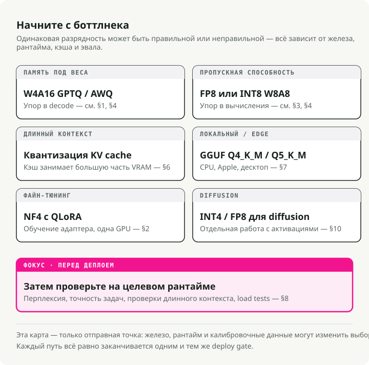
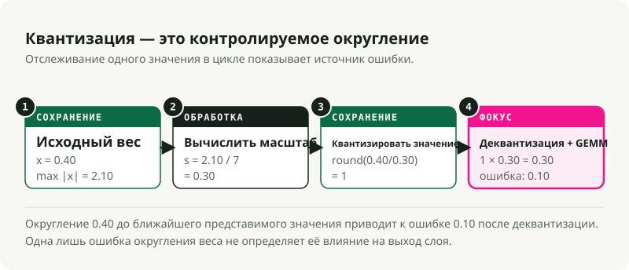
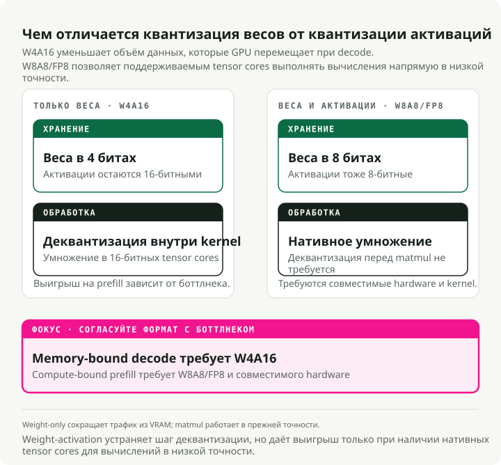
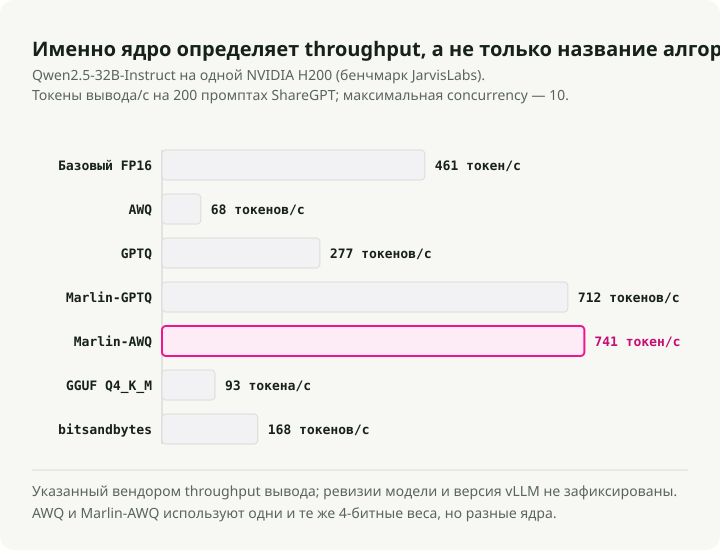
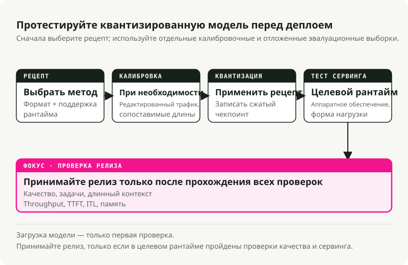

Автоматический перевод
Эта статья была автоматически переведена с оригинальной английской версии.
Квантация моделей в 2026 году: от основ до эксплуатации в продакшене
Квантация редко представляет собой простую операцию нажатия кнопки для сокращения количества бит и экономии памяти; даже её базовое определение зависит от того, осуществляется ли компрессия веса, активации или оба из нихВ системах производственной обработки запросов квантизация требует поиска баланса между память для весов, вычисления активаций, размер кэша KV, ядра во время выполнения, поддержка аппаратного обеспечения, данные калибровки и качество. Модель с 4 битами может поместиться в VRAM, но будет работать медленно, если ядро плохо оптимизировано, поскольку тестовая платформа JarvisLabs vLLM показывает моменты, когда алгоритм и ядро отличаются друг от друга. FP8 обеспечивает высокую производительность на GPU серии NVIDIA Hopper при наличии поддержки со стороны операционной системы и аппаратного обеспечения, однако остается бесполезным на устройствах без встроенных механизмов обработки тензоров в формате FP8; в TensorRT-LLM же матрица поддержки аппаратного обеспечения это делает данную зависимость явной. Квантизация кэша KV Это может оказаться более важным, чем квантация весов, при обработке длинных контекстов и высокой конкурентности; это изменяет числовой формат, используемый для хранения и чтения кэшируемых тензоров ключей/значений.
Кратко: сначала определите узкое место, а уже затем — ширину бита. Используйте AWQ или GPTQКогда веса не помещаются в VRAM. Используйте FP8 W8A8 при обслуживании высоконагруженных рабочих нагрузок на GPU с поддержкой FP8. Проведите тестирование Квантизация кэша KVКогда длинный контекст или высокая конкурентность истощают память. Используйте Файлы GGUF с тензорными кодировками llama.cpp такие как Q4_K_M, Q5_K_M или Q8_0 для локальных процессоров, чипов Apple Silicon и инференса на настольных ПК. Сохраняйте NF4В основном предназначено для финтунинга в стиле QLoRA, а не в качестве стандартного формата обслуживания в продакшене.**

1. Начните с узкого места
Полезный вопрос заключается не в том, «сколько бит я могу убрать?», а в том, «что в настоящий момент ограничивает эту рабочую нагрузку?»
Типичные узкие места и их источники возникновения:
| Если проблема именно в этом | Начните здесь. | Типичные инструменты | Проверьте перед развертыванием |
|---|---|---|---|
| Веса модели не помещаются в VRAM | Квантование W4A16 только по весам | AWQ или GPTQ с llm-compressor или GPTQModel |
Перплексити, программирование, рассуждения, выполнение инструкций |
| Высокопроизводительное обслуживание ограничено вычислительными возможностями | FP8 или INT8 W8A8 | FP8 PTQ SmoothQuant, TensorRT-LLM, vLLM | Пропускная способность, TTFT, точность выполнения задач |
| Длинный контекст или высокая конкурентность приводят к перегрузке GPU | Квантизация кэша KV | vLLM, TensorRT-LLM, или Кэш квантизации Transformerов | Восстановление информации из длинного контекста, задержки, безопасность и качество |
| Локальная инференс-обработка на CPU, Apple Silicon или настольных ПК | Файлы GGUF с локальной кодировкой тензоров | llama.cpp, Ollama, LM Studio |
Задержка обработки запроса, использование ОЗУ, способ кодирования выбранного тензора и субъективное качество результата |
| Настройка адаптера должна вмещаться в одну видеокарту. | NF4 / QLoRA | bitsandbytes, peft |
Потери при финальной настройке и качество объединённой модели |
| Пайплайн генерации изображений слишком объёмный или медленный | INT4 или FP8, специализированные для процессов диффузии | SVDQuant, Нунчаку, torchao, NVIDIA ModelOpt |
Визуальные артефакты, синхронизация промптов, задержка, VRAM |
Используйте эту таблицу в качестве карты. В разделах ниже объясняется, почему эти начальные точки отличаются друг от друга.
Несколько терминов перед математическими выражениями
- W{x}A{y} указывает на точность обработки весов и активаций в поддерживаемых алгоритмах, как правило, в путях выполнения операций типа GEMM в движках обслуживания. W4A16 хранит веса в формате 4 бита, а активации — с точностью 16 бит. W8A8 использует веса и активации в формате 8 бит в поддерживаемых вычислительных путях, однако он не определяет автоматически тип данных для постоянного хранения каждого тензора во время выполнения программы.**
- FP8, INT8, INT4, NF4 — это форматы чисел. Они определяют, какие значения могут быть представлены.
- GPTQ, AWQ, SmoothQuant, QuaRot — это алгоритмы. Они определяют способ преобразования обученной модели в формат с более низкой точностью.
- GGUF — это формат файла, а не алгоритм квантования. Он хранит тензоры вместе с метаданными для GGML и
llama.cpp-режимы выполнения. Файл GGUF может содержать неквантизированные типы тензоров, такие какF16,BF16, илиF32, или квантизированные кодировки тензоров и предустановки, такие какQ4_K_M,Q5_K_M,Q8_0,IQ*,TQ*, илиMXFP4. Не читайте.GGUFкак рецепт обслуживания данных в формате FP8 W8A8 в стиле CUDA. - Кэш KV — это кэш внимания, используемый во время генерации. Он хранит предыдущие ключи и значения, чтобы модель не пересчитывала всю конверсацию для каждого токена.
- Квантизация кэша KV хранит кэшированные тензоры активации вида «ключ/значение» в формате кэша с более низкой точностью, таком как FP8, INT8, INT4 или INT2, в зависимости от поддержки на этапе выполнения. Это отличается от кэширование префиксов, PagedAttention, или перенос нагрузки, которые определяют, будут ли записи кэша повторно использоваться, как они будут аллоцироваться и где они находятся.
- GEMM — это общее умножение матриц. Большая часть времени на выполнение инференса трансформеров тратится на умножение матриц.
2. Квантизация — это контролируемое округление
Квантизация преобразует значения высокой точности в меньший набор представимых значений, что является основным определением, используемым как в Hugging Face Optimum и TensorRT-LLM. Это позволяет сэкономить память и пропускную способность. Однако это также приводит к ошибке округления.
Квантование из формата BF16 в INT4 сокращает количество доступных значений до всего 16 дискретных категорий, и именно поэтому в работах, посвящённых низкобитным архитектурам, таким как GPTQ, AWQ, и SVDQuant Тратите столько усилий на аутлайеры и ошибку реконструкции. Если эти категории точно отражают распределение весов модели, вы сокращаете потребление памяти, не теряя при этом её функциональных возможностей. Однако если сетка квантования уничтожает важный канал с аутлайером, модель теряет способность к логическим рассуждениям, выполнению инструкций или сохранению визуальной четкости.
Симметричное и асимметричное отображение
Следуя аффинному отображению, используемому в общепринятых Руководства по квантованиюКвантизация преобразует непрерывное число с плавающей точкой \(x \in [\beta, \alpha]\) в дискретную сетку.
- \(x\) — исходное значение с высокой точностью.
- \(x_q\) — квантизированное значение.
- \(s\) — шаг масштабирования, то есть размер шага.
- \(z\) — нулевая точка, целочисленное положение, которое представляет
0.0. - \([q_{\min}, q_{\max}]\) — это целевой диапазон значений. Значения с знаком в 4 битах обычно принимают значения в диапазоне \([-7, 7]\).
Симметричная квантовка центрирует сетку вокруг нуля и устанавливает \(z = 0\):
Это удобно для работы с аппаратным обеспечением, поскольку при выполнении вычислений не требуется вычитать смещение нулевой точки; стек квантования PyTorch предоставляет эти параметры аффинного масштабирования и смещения нулевой точки в виде примитивных параметров квантования. torchaoАсимметричная квантовка перемещает сетку так, чтобы она охватывала искажённые диапазоны:
Такая смещённая сетка позволяет лучше сохранять активации, имеющие только положительные значения, однако наличие смещения требует дополнительных вычислений, если ядро не обрабатывает этот фактор эффективно.

Важна степень разрешения масштабирования
Коэффициент масштабирования может применяться к всему тензору весов, отдельному каналу или небольшой группе значений; vLLM: документация к кэшу KV в формате FP8 Используйте ту же разницу между стратегиями масштабирования на уровне тензора и на уровне голов внимания. Меньшие группы обычно лучше сохраняют качество, однако они требуют хранения большего количества метаданных, связанных с параметрами масштабирования.
- Масштабирование по тензору: использует один коэффициент масштабирования для всей матрицы весов. Этот подход прост в вычислении, однако наличие хотя бы одного аномально большого значения веса в любой точке матрицы приводит к искажению целочисленной структуры, что снижает точность всех остальных весов в данном слое.
- Масштабирование по каналам: предусматривает присвоение отдельного коэффициента масштабирования каждой строке (каналу вывода) матрицы весов. Поскольку у разных нейронов-выходов разный диапазон значений, применение индивидуального коэффициента для каждого канала позволяет избежать потери точности из-за узких диапазонов в пользу более широких каналов. Этот метод является стандартным значение по умолчанию во многих реализациях. Квантование весов 8 бит пути.
- Масштабирование по группам (по блокам): Каждая строка матрицы весов делится на небольшие последовательные блоки — обычно по 64 или 128 элементов — и каждому блоку присваивается коэффициент масштабирования. Этот подход является оптимальным для форматов весов с 4 битами, поскольку он позволяет изолировать крайне экстремальные значения весов в небольшой локальной группе (например, как описано в документациях AutoGPTQ).
group_size=128в своей Примеры GPTQ), обеспечивая точность для остальных весов слоя.
Веса являются статическими, поэтому их масштабы можно рассчитать офлайн ещё до загрузки модели. Активации меняются с каждым токеном, что делает их диапазоны непредсказуемыми. Это создаёт два варианта обработки активаций при их использовании в работе модели:
- Масштабирование статической активации вычисляет масштабы активации офлайн с использованием набора данных для калибровки, затем закодирует эти масштабы в саму модель. Во время работы модель использует эти фиксированные значения без дополнительных вычислений. Это делает процесс быстрым, однако такой подход работает только в том случае, если данные калибровки полностью соответствуют длинам и распределениям входных данных, характерным для реальной среды. Если запрос в продакшене приводит к резкому скачку активации за пределами калиброванного диапазона, модель обрезает этот сигнал, что нарушает корректность вывода.Динамическое масштабирование активации** вычисляет масштаб активаций «на лету» во время прохождения данных вперед, учитывая фактические значения токенов в данный конкретный момент. Он идеально справляется с изменениями в промптах и позволяет обнаруживать неожиданные скачки активаций, однако вычисление минимума и максимума тензора активаций на каждом слое увеличивает нагрузку на процессор и требует специализированных, оптимизированных ядер для обеспечения высокой скорости работы.
Этот Кэш KV располагается между этими случаями. Ключи и значения представляют собой тензоры активации во время выполнения: каждый слой вычисляет их на основе скрытых состояний в процессе прямого прохождения данных. Однако после генерации они перестают быть временными промежуточными результатами матричного умножения и становятся постоянными состояниями обслуживания, которые механизм внимания использует для обработки последующих токенов. Сервисный движок может хранить такие состояния с более низкой точностью и сохранять вместе с ними метаданные о масштабировании, как показано на vLLM: кэш KV в квантованном формате, Кэш KV в формате FP8 от TensorRT-LLM, и Кэш квантизации Transformer. Выбор способа хранения кэша не связан с точностью активации, используемой внутри линейных ядер, и именно поэтому термин «квантизация KV-кэша» существует, но его не следует использовать как синоним любой оптимизации KV-кэша.
PTQ и QAT выполняются на разных этапах
Квантизация после обучения, или PTQ — это метод компрессии обученной модели в дополнение к основному процессу. Речь идет о тренировке с учетом квантизации, или **QAT
| Метод | Когда обучаются диапазоны | Используйте его в тех случаях, когда | Сумма, которую вы оплачиваете |
|---|---|---|---|
| PTQ с учётом только веса модели | Офлайн режим для статических весов | Модель не подходит или процесс декодирования ограничен пропускной способностью сети. | Активации по-прежнему выполняются в 16-битном режиме. |
| Статический PTQ | В режиме офлайн, на основе команд калибровки | Вы хотите быстрое обслуживание W8A8. | Данные калибровки должны соответствовать данным производства. |
| Динамический PTQ | Время выполнения на батч или по пути активации | Распределения входных данных сильно различаются между собой. | Дополнительная работа во время выполнения и ограниченная поддержка аппаратного обеспечения |
| QAT | Во время обучения | PTQ нарушает качество работы чувствительной модели | Полная инфраструктура для обучения и дополнительные вычислительные ресурсы |
Данные калибровки должны соответствовать типу трафика, который будет обрабатываться; например, механизм калибровки KV-кэша vLLM использует специально отобранный набор данных llm-compressor. Если промпты для производственной среды представляют собой длинные последовательности данных из технологии RAG, то короткие абзацы с информацией с Википедии обеспечат хорошие показатели для бенчмарков, но приведут к сбоям при развертывании. Модель будет настраивать масштабы своих активаций под короткий текст, после чего столкнётся с иными паттернами активаций при поступлении реальных промптов с длинным контекстом — риск, который также проявляется в оценка квантизации с длинным контекстом.
3. Форматы чисел определяют требования к аппаратному обеспечению
Формат числа задаёт, какие значения может хранить модель в памяти, однако наличие такого формата ещё не гарантирует, что ваша GPU сможет эффективно выполнять вычисления с ним. Для быстрой обработки необходимы специальные ядра во время выполнения и поддержка аппаратного обеспечения для конкретной ширины бита и формата; документация TensorRT-LLM описывает и то, и другое. список рецептов и матрица поддержки аппаратного обеспечения.
| Форматирование | Память, занимаемая каждым значением | Хороший стандартный вариант для | Основная точка останова |
|---|---|---|---|
| BF16 / FP16 | 2 байта | Обслуживание, совместимое с базовыми процессами инференса и обучения | Высокое потребление VRAM и высокая нагрузка на пропускную способность памяти |
| FP8 | 1 байт | Высокопроизводительное обслуживание W8A8 на платформах Ada, Hopper и Blackwell | Необходимы встроенные ядра тензоров формата FP8 и поддержка на уровне выполнения |
| INT8 | 1 байт | W8A8 в режиме работы на старом или не NVIDIA-совместимом оборудовании | Аномалии активации и чувствительность статической калибровки |
| INT4 | 0,5 байта | W4A16 при том, что основным ограничением является память на веса | Потеря качества у меньших моделей или моделей с высокой нагрузкой на обработку логики |
| FP4 / NVFP4 | ~0,5 байта | Эксперименты эпохи Blackwell и первоначальные пути обслуживания | Требования к компилятору и среде выполнения, специфичные для аппаратного обеспечения |
| кодировки GGUF / предустановки llama.cpp | Переменная | Локальная обработка на CPU, чипы Apple Silicon, настольные ПК и инференс на периферийных устройствах | GGUF представляет собой контейнер; способ кодирования тензоров определяет выбор метода квантования. |
| NF4 | 0,5 байта | Обучение адаптера QLoRA | Обычно используется неправильный формат экспорта для работы в продакшене |
BF16 и FP16 оба используют 16 бит, но распределяют точность по-разному, что приводит к различным способам возникновения ошибок. BF16 сохраняет диапазон экспоненты в 8 бит, характерный для FP32, поэтому переполнение в нём происходит реже. FP16 имеет больше бит для мантии, но более узкий диапазон экспоненты, из-за чего при резких скачках активации требуется повышенная осторожность; в оценке, проведённой Kurtic и его коллегами, прямо используется BF16 в качестве базового формата при сравнении форматов обслуживания данных FP8, INT8 и INT4.
У формата FP8 существуют два распространённых варианта. E4M3 обеспечивает более высокую точность и обычно используется для весов и активаций на этапе передачи данных. E5M2 предоставляет более широкий динамический диапазон, что делает его более полезным для градиентов или случаев нестабильных путей активаций; библиотека vLLM поддерживает оба варианта. Типы кэша KV для форматов FP8 E4M3 и E5M2. В исследовании Kurtic и др., представленном на конференции ACL 2025 под названием «Give Me BF16 or Give Me Death», FP8 W8A8 фактически обеспечивает безубыточную обработку данных. В семействе Llama-3.1 было проведено более 500 000 тестов. Однако это не означает, что любая реализация в формате FP8 будет работать автоматически. Это означает, что данный формат проявляет высокую эффективность при правильном использовании в инфраструктуре обслуживания.
Blackwell вводит форматы микромасштабирования, такие как MXFP8 и NVFP4. В отличие от подхода, при котором один масштаб применяется ко всему тензору или строке, микромасштабирование использует крошечные блоки для обработки данных. Объяснение технологии NVFP4 от NVIDIA описывает 4-битные числа с плавающей точкой, представленные группами по 16 единиц, с коэффициентами масштабирования типа FP8 и более высоким уровнем масштабирования типа FP32. Такой подход направлен на обеспечение объёма, схожего с INT4, при сохранении поведения, характерного для чисел с плавающей точкой. Однако он требует соответствующей архитектуры оборудования, компилятора и поддержки во время выполнения, и именно по этой причине TensorRT-LLM указывает Поддержка FP4 и FP8 в различных поколениях GPU.
4. Квантация только весов против квантации весов и активаций
Обозначение WxAy описывает точность весов и активаций, которые в процессе инференса различным образом нагружают GPU.

Во время этапа предзаполнения модель обрабатывает входной запрос. Эта фаза обычно ограничена вычислительными ресурсами, поскольку GPU выполняет сложные умножения матриц, и именно поэтому Способы преобразования W8A8 в FP8/INT8 имеет значение для обслуживания, ориентированного на пропускную способность.
Во время декодирования модель генерирует по одному токену за раз. Этот этап часто ограничивается объёмом памяти и пропускной способностью, поскольку GPU постоянно загружает веса из VRAM для формирования следующего токена; статьи, посвящённые исключительно весам, такие как GPTQ и AWQ Цель — достичь указанного давления путем сокращения объёма данных.W4A16** сжимает веса и сохраняет активации в форматах BF16 или FP16. Графическая карта загружает меньше байтов данных весов, после чего деквантизирует их обратно в формат с более высокой точностью для выполнения операций умножения. Это способствует решению проблем с декодированием и размещением данных в памяти. Однако это не делает процесс предзаполнения, зависящий от вычислений, быстрее, поскольку самые сложные матричные операции всё равно выполняются в 16-битном формате.
W8A8сжимает веса и тензоры активаций, используемые поддерживаемыми ядрами для выполнения операций матричного умножения. Если аппаратное обеспечение оснащено встроенными ядрами для обработки тензоров с низкой точностью, движок обслуживания может выполнять матричные вычисления непосредственно в форматах FP8 или INT8. Именно поэтому использование формата FP8 способствует повышению пропускной способности: оно снижает объём данных, передаваемых в память, и позволяет использовать более быструю арифметику. Однако это не означает автоматически, что кэш KV хранится в том же 8-битном формате; необходимо проверить настройки среды выполнения. тип данных кэша или реализация кэша отдельно.
Если модель едва помещается в VRAM, начните с квантование только весов для снижения занимаемой памяти. Если модель влезает, но испытывает трудности с пропускной способностью при высоких объемах данных в пакетах, проведите оценку FP8 или INT8 W8A8 для ускорения этапа вычислений. Если проблемы с памятью возникают только во время длинных разговоров, сначала оцените вклад KV-кэша. Если он доминирует, проведите тестирование. Квантование кэша KV вместо дальнейшего сжатия весов; если преобладают повторяющиеся префиксы, включите кэширование префиксов вместо этого.
5. Алгоритмы против ядров времени выполнения
Алгоритмы квантизации (например GPTQ или AWQ) определить способ маппинга весов модели на более низкую точность. Ядра во время выполнения (например Marlin или специализированные ядра vLLM) представляют собой низкоуровневый код GPU, отвечающий за выполнение умножения матриц. Модель с высоким уровнем сжатия будет работать быстро лишь в том случае, если существует оптимизированный ядро для её конкретного формата квантования.

тестовая платформа vLLM от JarvisLabs на модели Qwen2.5-32B-Instruct с использованием NVIDIA H200 становится виден эффект ядра:
| Квантование / ядро | Перплексити — чем ниже, тем лучше. | Pass@1: чем выше значение, тем лучше. | Пропускная способность | TTFT |
|---|---|---|---|---|
| FP16 базовая конфигурация | 6.56 | 56.1% | 461 ток/сек | 57,7 мс |
| AWQ | 6.84 | 51.8% | 68 токов/секунда | 277,8 мс |
| GPTQ | 6.90 | 46.3% | 277 токов/секунда | 107,1 мс |
| Marlin-GPTQ | 6.97 | 45.7% | 712 токов/секунда | 51,9 мс |
| Marlin-AWQ | 6.84 | 51.8% | 741 ток/сек | 73,5 мс |
| GGUF Q4_K_M | 6.74 | 51.8% | 93 токена/секунду | 958,0 мс |
| bitsandbytes | 6.67 | 51.8% | 168 токов/секунда | 135,3 мс |
Не копируйте эти значения в свою среду разработки. Они получены с использованием одной модели, одного класса GPU и одной конфигурации программного обеспечения. Эти показатели отражают более узкую группу случаев: название алгоритма в файле чекпоинта не указывает на скорость предоставления услуг.
Например, AWQ И Marlin-AWQ также используют одинаковые 4-битные веса. Эти Marlin Реализация работает гораздо быстрее, поскольку ядро CUDA объединяет процессы деквантизации и умножения матриц в одну высокооптимизированную операцию на GPU.
Проведите тестирование на производительность базовой версии и сжатых вариантов с использованием одного и того же набора промптов и одного и того же инструмента, например vllm bench serve:
vllm bench serve \
--model ./outputs/Qwen2.5-32B-Instruct-AWQ-W4A16 \
--dataset-name sharegpt \
--num-prompts 200 \
--input-len 1024 \
--output-len 256
Отслеживайте пропускную способность, TTFT, задержку между токенами, использование памяти и качество выполнения задачи. Если какие-либо из этих показателей меняются в противоположных направлениях, это означает, что тестирование выполняет свою функцию.
Меню алгоритмов
Используйте эту таблицу в качестве справочника, а не рейтинга:
| Алгоритм | Общий формат | Что оно пытается сохранить | Основная стоимость |
|---|---|---|---|
| GPTQ | W4A16 | Пошаговая реконструкция с использованием оценок гессиана | Медленная калибровка и более сложная обработка |
| AWQ | W4A16 / W4A8 | Важные каналы активации | Требуется калибровка и обновление ядер обслуживания. |
| SmoothQuant | W8A8 | Поведение активации INT8 при перемещении значений, выходящих за пределы диапазона, в состав весов | Настройка масштабирования по модели |
| QuaRot / SpinQuant | Снижение давления аномалий активации путем применения ротаций | Сложность ротации во время выполнения | |
| HQQ | Быстрая компрессия только весов без калибровки | Для обеспечения качества необходимы проверки на этапе обработки данных при очень низкой ширине бита. | |
| QLoRA (NF4) | NF4 | Память для обучения адаптера | Не лучший вариант по умолчанию для обслуживания |
| llama.cpp GGUF — квантование K-квантами и IQ-квантами | Смешанные кодирования тензоров с низким количеством битов | Качество локальной инференции на единицу объёма данных | Не предназначен для обработки в параллельных задачах в облаке. |
Инструментальная экосистема постоянно развивается. AutoGPTQ был архивировано в апреле 2025 года, а AutoAWQ был архивирован и официально устарел в мае 2025 года. Для новой работы начните с llm-compressor для compressed-tensors чекпоинты, потребляемые vLLM, или Модель GPTQ когда вам требуется активный путь GPTQ с использованием Marlin, МачетеОпции памяти типа MoE и сброс данных на диск.
Прежде чем покинуть меню алгоритмов, стоит отметить один важный момент: прунинг и дистилляция также снижают затраты на обслуживание, однако они не являются форматами квантования. 2:4 структурированная редкость удаляет веса в определённом шаблоне, который могут использовать ядра редких тензоров NVIDIA. ДистилляцияОбучается более мелкая модель-ученик для копирования поведения более крупной модели, что может хорошо сработать для узких задач. Для обеих моделей требуется отдельный процесс обучения или прунинга, поэтому не стоит включать их в список вариантов квантизации, если вы на самом деле не планируете выполнять дополнительные работы.**
6. Память, необходимая для обслуживания модели, — это не только веса
При планировании аппаратных требований имейте в виду, что сжатый чекпоинт представляет собой лишь часть общего объема памяти, занимаемого моделью. Не рассматривайте его как еще один вариант квантизации. Считайте его инструментом оценки размера, который помогает определить, достаточна ли квантизация весов; PagedAttention Он рассматривал кэш KV как ключевой компонент памяти для обслуживания запросов, а не как второстепенную деталь реализации.
Офлайн-квантация может быть ограничена по уровням. Инструменты вроде llm-compressor Можно загрузить блок трансформера, выполнить вычисления, связанные с калибровкой и квантованием, записать сжатый блок и перейти дальше. Это позволяет держать пиковую нагрузку на памяти GPU ближе к размеру самого большого активного слоя плюс буферам калибровки. Для хранения исходного чекпоинта всё равно требуется оперативная память CPU и диск, однако GPU не обязательно должен хранить полную модель в формате BF16.
Пиковая нагрузка на памяти GPU во время офлайн-квантования может выглядеть примерно так:
При обслуживании требования ещё строже: весь сжатый чекпоинт должен постоянно находиться в памяти вместе с кэшем KV и временными буферами во время работы. Кэш KV растёт вместе с длиной контекста и размером активной группы обработки.$$ \text{Кэш KV (байты)} = 2 \times L \times H{\text{kv}} \times D \times S}} \times B_{\text{batch}} \times \text{BytesPerValue
$$
Где:
- \(L\) — количество слоев.
- \(H_{\text{kv}}\) — количество голов внимания для ключей и значений. Аттеншн для групповых запросов сокращает это за счёт того, что несколько голов запросов могут делиться меньшим количеством голов KV. \(D\) — размер каждой головы, обычно 128 или 256. \(S_{\text{ctx}}\) — количество токенов в промпте плюс количество сгенерированных токенов. \(B_{\text{batch}}\) — размер активной группы данных для обработки. \(\text{BytesPerValue}\) равен 2 для форматов BF16 или FP16 и 1 для форматов FP8 или INT8; в vLLM этот параметр... Режим кэширования KV в формате FP8 это пример стека обслуживания, используемый в данной статье.
Квантизация KV-кэша существует на самом деле, но она не связана с повторным использованием кэша.
Да, кэш KV можно квантизировать во время инференса. На каждом шаге декодирования генерируются тензоры активаций K и V для нового токена. Модели типа W8A8 могут уже использовать форматы FP8 или INT8 для вычислений проекции, однако кэш представляет собой отдельный объект хранения: большинство систем обслуживания сохраняют его в формате, соответствующем самой модели/кэшу, если только вы не включите специальную настройку. тип данных KV-кэшаиспользуйте чекпоинт с масштабируемой кэш-памятью или выберите другой вариант реализация кэша с квантованием. При включённой квантовке кэша KV движок записывает записи кэша в виде представления с более низкой точностью вместе с масштабирующими коэффициентами. При последующем обработке внимания считывается этот кэш с низкой точностью; либо происходит деквантовка прямо внутри ядра механизма внимания, либо, в некоторых реализациях, часть операций внимания выполняется в квантированном пространстве.
Документация к стабильному кэшу KV в формате квантования от vLLM обеспечить прямой доступ к этому kv_cache_dtype="fp8" или --kv-cache-dtype fp8. vLLM поддерживает форматы кэша FP8 E4M3 и E5M2, стратегии масштабирования на уровне тензоров и голов внимания, а также три способа масштабирования: стандартные параметры, оценку масштабирования во время разогрева и калибровку на основе набора данных. llm-compressor. С FlashAttention 3vLLM также может выполнять операции внимания в пространстве FP8 путем квантизации запросов наряду с ключами и значениями.
TensorRT-LLM обеспечивает доступ к кэшу FP8 KV через KvCacheConfig(dtype='fp8') а также выделяет кэши FP8 KV и NVFP4 KV в качестве отдельных схем квантования, отличных от квантования весов и активаций. Hugging Face Transformers также имеет QuantizedCache путь через cache_implementation="quantized", с hqq поддержка форматов кэша int2, int4 и int8 quanto Поддерживаются форматы int2 и int4.
Тем не менее, квантование KV-кэша отличается от обычного KV-кэширования. Обычное KV-кэширование хранит предыдущие ключи и значения для того, чтобы избежать их повторной вычислительной обработки. Кэширование префиксов Повторно использует блоки кэша для запросов с одинаковым префиксом. PagedAttention снижает фрагментацию и улучшает процесс выделения памяти. Механизм переноса данных KV осуществляет перемещение блоков кэша между разными уровнями памяти. Это техники управления кэшем; их можно комбинировать с квантованием, однако сами по себе они не являются квантованием.
Риск снижения качества также отличается от подхода PTQ, основанного исключительно на весах. Квантование кэша KV вносит ошибки в состояние внимания, считываемое на каждом последующем шаге декодирования, поэтому для проверки способности к обработке длинных контекстов, поведения в нескольких раундах диалога, параметров безопасности/отказа, форматирования результатов работы инструментов и задержек при выводе данных требуются отдельные тесты; KVQuant, KIVI, и vLLM: исследование кэша KV в формате FP8 Все рассматривают квантование KV-кэша как отдельную проблему.
Для модели объемом 70 миллиардов параметров с поддержкой контекста в 32 килобайта размер кэша KV может превысить экономию памяти, получаемую от еще одной итерации сжатия весов. В такой ситуации необходимо провести тестирование. Квантование кэша KV в формате FP8 более полезно, чем принудительная конвертация весов в более компактный формат.
7. Аппаратное обеспечение ограничивает выбор
Размер занимаемой памяти для весов легко оценить по количеству параметров и точности хранения, что соответствует тому же принципу определения размера, который используется в обсуждения по вопросам оперативной памяти, связанные с кэшем типа KV:
$$
\text{Размер веса (ГБ)} \approx \frac{\text{Количество параметров (Байт)} \times \text{Количество бит}}{8}
$$
| Размер модели | Веса в формате BF16 | Веса в формате FP8 / INT8 | Веса типа INT4 |
|---|---|---|---|
| 7B / 8B | ~14–16 ГБ | ~7–8 ГБ | ~3,5–4 ГБ |
| 14 млрд | ~28 ГБ | ~14 ГБ | ~7 ГБ |
| 32B / 34B | ~64–68 ГБ | ~32–34 ГБ | ~16–17 ГБ |
| 70B | ~140 ГБ | ~70 ГБ | ~35 ГБ |
| 109 млрд параметров MoE | ~218 ГБ в общей сложности | ~109 ГБ | ~55 ГБ |
Модели на основе смеси экспертов могут активировать меньше параметров на токен, однако весь набор весов всё равно должен храниться где-то, если только среда выполнения не поддерживает их перенос; матрица поддержки квантизации в TensorRT-LLM обрабатывает Семейства моделей MoE в качестве целей развертывания с собственными поддерживаемыми схемами настройки.
Архитектура оборудования, предназначенного для развертывания, ограничивает список приемлемых форматов квантования:
- CPU-вычисления зависят от векторных инструкций, таких как AVX-512 или AMX. A GGUF файл загружен через
llama.cppэто практический подход. - Apple Silicon использует объединённую память, поэтому локальные модели могут использовать большой общий пул RAM вместо отдельной VRAM; GGUF и
llama.cppостаётся стандартным путём к локальной среде выполнения, поскольку GGUF разработан для исполнителей GGML. - NVIDIA Ampere поддерживает пути обработки данных с использованием тензорных ядер в формате INT8, но не встроенные вычисления с тензорными ядрами в формате FP8 W8A8. Распространёнными вариантами являются квантование только весов в формате W4A16 или использование статического формата INT8, что соответствует Матрица поддержки аппаратного обеспечения TensorRT-LLM.
- NVIDIA Ada и Hopper поддерживают пути обслуживания данных в формате FP8 в TensorRT-LLM. FP8 W8A8 Тестирование производительности серверной части на этих GPU действительно имеет смысл.
- NVIDIA Blackwell добавляет NVFP4 и поддержка микромасштабирования, но путь к программному обеспечению по-прежнему имеет значение. Считайте стеки с плавающей точкой с низким количеством бит в ранних версиях чувствительными к версии.
8. Калибровка и оценка перед развертыванием
Не отправляйте квантизированную модель только потому, что она загружается. Отправляйте её после того, как она пройдёт проверки качества и работоспособности для вашей нагрузки; недавние тесты квантизации показывают разные результаты для Обслуживание LLM, задачи с длинным контекстом, и модели с высокой степенью логического анализа.

Для калибровки используйте промпты, имитирующие реальные запросы в производственной среде:
- Включите следы работы RAG, SQL-запросы, историю действий агента, задачи с кодом, данные пакетов вызовов инструментов и системные промпты из целевой рабочей нагрузки; статический PTQ зависит от данных калибровки, соответствующих распределению в производственных условиях. — Соответствуйте длинам последовательностей. Короткие запросы с одним шагом обработки не позволят выявить поведение активации при работе с длинным контекстом.
- Сохранять
embed_tokensиlm_headпри более высокой точности, если метод или среда выполнения это позволяют, распространённый шаблон исключения в Способы сжатия LLM. - Используйте достаточное количество образцов для стабилизации диапазонов активаций. На практике, 128–512 типичных промптов является распространённой отправной точкой для рабочих процессов типа калибровки. Перед использованием логов из продакшена необходимо удалить конфиденциальную информацию и личные данные пользователей.
Для оценки следует проверять как качество языка, так и поведение сервиса при обслуживании запросов:
- Перплекситет на стандартном корпусе позволяет выявлять общее ухудшение качества языка, но тестовая среда JarvisLabs Это полезное напоминание о том, что показатели перплекситета и пропускной способности могут изменяться по-разному. Задачи конкретной области выявляют сбои, которые скрывает показатель перплекситета. Используйте это. HumanEval для написания кода, MMLU для расширения кругозора и AIME или MATH-500 для математических рассуждений в тех случаях, когда значимы соответствующие домены. — Форматирование имеет решающее значение для агентных систем. Требуется проверять соответствие JSON-схеме, формат вывода в Markdown, структуру вызовов инструментов и поведение при отказе, поскольку оценки квантизированных моделей могут упускать сбои на уровне приложения даже в тех случаях, Точность агрегированных тестов остаётся стабильной..
- Тесты на длинный контекст позволяют выявить повреждения, вызванные квантизацией кэша KV. Метод «иглы в копне сена» является примитивным, но результаты квантования длинного контекста Покажите, почему эти проверки должны находиться в шаге развертывания.
Тесты нагрузки должны отображать пропускную способность, время отклика до первого ответа, задержку между токенами, максимальную емкость пакетов и пиковую загрузку памяти; vLLM предоставляет эту информацию через
vllm bench serveТщательно оценивайте модели, требующие сложных процессов рассуждения. Квантизация уровня Sub-4-bit или без использования технологии W4A4 может снизить точность рассуждений даже в том случае, когда базовый показатель перплекситета кажется стабильным; именно в этом и заключается основное предупреждение. Исследование моделей рассуждения с квантованием.
9. Рабочий процесс в репозитории-компаньоне
Сопутствующий репозиторий, slavadubrov/демонстрация_сжатия_моделей, предназначен для обеспечения воспроизводимости процесса принятия решений. Он использует uv и сосредотачивается на планировании, шаблонах, тестовых запусках и конфигурациях для сравнительных тестов, основанных на тех же источниках, что и здесь: vLLM, Компрессор LLM, TensorRT-LLM, а также статьи с описанием алгоритмов.
Скопируйте его и изучите поддерживаемые алгоритмы:
git clone https://github.com/slavadubrov/model-compression-demo.git
cd model-compression-demo
uv run python demo.py list-algorithms
Начните с планирования и определения масштабов:
uv run python demo.py plan \
--model-preset llama3-8b \
--goal fit-memory \
--hardware ampere \
--context 4096 \
--concurrency 4
uv run python demo.py estimate \
--model-preset llama3-8b \
--scheme w4a16 \
--context 8192 \
--concurrency 8
Затем сгенерируйте рецепт и выполните пробную калибровку перед тем, как тратить время GPU:
uv run python demo.py recipe --algorithm gptq-w4a16
uv run python demo.py quantize \
--algorithm gptq-w4a16 \
--model Qwen/Qwen3-0.6B \
--calibration-file examples/representative_calibration.jsonl \
--text-column text \
--dry-run
Для обслуживания и планирования тестирования на производительность:
uv run python demo.py serve-command \
--algorithm fp8-dynamic \
--fp8-kv-cache \
--enable-prefix-caching
uv run python demo.py benchmark-plan \
--model Qwen/Qwen2.5-32B-Instruct \
--algorithms gptq-w4a16,awq-w4a16,bnb-nf4,gguf-q4 \
--dataset-name sharegpt \
--num-prompts 200 \
--input-len 1024 \
--output-len 256 \
--output-json reports/quantization-benchmark-plan.json
Наконец, сравните базовые и сжатые модели с заданными пороговыми значениями:
uv run python demo.py quality-eval \
--base-model Qwen/Qwen3-0.6B \
--compressed-model outputs/Qwen3-0.6B-W4A16 \
--mode all \
--lm-eval-task hellaswag \
--lm-eval-limit 50 \
--max-perplexity-delta-pct 5 \
--max-task-regression 0.02 \
--output-json reports/qwen3-0.6b-w4a16-quality.json
Выполните работу в следующем порядке: спланируйте цель, оцените потребности в памяти, протестируйте алгоритм в режиме «сухой» запуск, проведите тестирование производительности при обслуживании запросов, а затем сравните качество результата с установленными порогами. Такая последовательность соответствует разделению этой статьи на отдельные этапы. размер памяти, тестирование производительности в рантайме, и оценка качества.
10. Моделям диффузии требуется отдельный путь обработки
Правила квантизации LLM не могут быть прямо перенесены на алгоритмы диффузии и конвейеры типа diffusion-transformer; SVDQuant рассматривает квантизацию диффузионных моделей как отдельную проблему аномалий активаций, а не как прямую аналогию процедуры PTQ, предназначенной исключительно для весов LLM. SVDQuant / Nunchaku и Nивидиа ModelOpt — квантование процесса диффузии существует.
Используйте план на уровне компонентов:
- Сохраняйте VAE в 16-битном формате. Небольшие ошибки в этой области могут привести к появлению цветовых полос, шума или нарушению структуры изображения, поэтому в рамках процессов диффузии следует сохранять чувствительные компоненты, если только какой-либо метод не проверяет их явным образом.
- Сначала квантируйте основную часть DiT или U-Net, поскольку она обычно содержит наибольшее количество параметров, что соответствует подходу, используемому на уровне отдельных компонентов. методы квантизации диффузии3. Обрабатывайте кодировщики текста отдельно. Квантизация моделей T5-XXL или CLIP может нарушить согласованность промптов и качество отображения текста, поэтому оценивайте их как отдельные компоненты, а не как обычные блоки трансформеров.
- Используйте методы, учитывающие процесс диффузии, такие как SVDQuantКогда основной проблемой являются аутлейеры активации.**
- Оценивайте с использованием изображений, а не текстовых метрик. Проверяйте соответствие запросу, отображение текста, оттенки кожи, баланс цветов, детализацию, задержку и объём видеопамяти.
Если набор для оценки содержит только простые или чрезвычайно распространённые запросы, вы упустите сбои в редких сценариях. Необходимо включить сложные случаи: мелкий текст, руки, повторяющиеся объекты, структурированные композиции и запросы с отрицательными ограничениями, поскольку сбои квантизации процесса диффузии проявляются визуально, а не в... перплекситет языковой модели.
11. По умолчанию в продакшене
Для обслуживания LLM в корпоративных средах, начните с Базовая версия в формате BF16 в именно том движке обслуживания, который вы планируете использовать. Если цель — максимальная пропускная способность и аппаратное обеспечение это позволяет, проведите тестирование. FP8 W8A8. Если модель не подходит, проведите тестирование. AWQ или GPTQ W4A16 с Ядра класса Marlin. Если проблема заключается в большом объёме контекста или конкурентности, проведите тестирование. Квантование кэша KV в формате FP8. Если проблема в повторяющихся префиксах, также включите кэширование префиксов. Отправляйте сжатую версию только в том случае, если проходят как критерии качества, так и критерии производительности при обслуживании запросов.
Для локальных и эッジ-вычислений начните с GGUF Используйте файлы с расширением Q4_K_M или Q5_K_M. При наличии достаточной памяти и приоритете качества перед размером файла перейдите на формат Q8_0 GGUF. Снижение разрешения ниже 4 бит — это крайняя мера, а не стандартное решение.
Для доработки модели используйте NF4 с QLoRA для недорогой настройки адаптеров. Оцените адаптер в приложении перед слиянием. После слияния экспортируйте его в финальный продукт, который вам действительно нужен: a llama.cppсовместимый файл GGUF, AWQ/GPTQ/compressed-tensors чекпоинт, чекпоинт для обслуживания в формате FP8 или BF16.
Для процесса диффузии необходимо обеспечить стабильность VAE, сначала квантировать основную часть модели, а затем оценивать результат визуально. Показатель текстовой перплексности не позволяет определить, сломалась ли цепочка обработки изображений, поэтому следует использовать специфичные для диффузии признаки, такие как SVDQuant и визуальная оценка.
Основные выводы
- Квантизация сочетает управляемое округление с временная реализация. Сама ширина бита не определяет ни скорость, ни качество. Кэш KV, локальная память выполнения, память для финальной настройки или память вображений в конвейере обработки.
- W4A16 Это в первую очередь оптимизация памяти и процесса декодирования. Она снижает нагрузку на VRAM и пропускную способность памяти, однако не ускоряет операции предзаполнения, зависящие от вычислительных ресурсов.
- FP8 Это инструмент обслуживания, предназначенный для использования там, где аппаратное обеспечение и ядра поддерживают нативные вычисления с низкой точностью.
- Ядра могут существенно влиять на результаты тестирования. Marlin, мачете, BitBLAS, vLLM, и TensorRT-LLM Пути могут иметь такое же значение, как и алгоритм квантования.
- GGUF это формат файла для GGML
llama.cppВремя выполнения. Выбор способа квантования определяется методом кодирования тензоров или предустановкой, содержащейся в файле GGUF. - Кэш KV является ключевым элементом памяти первого класса. Длинный контекст и конкурентность Можно сделать его больше, чем размер сжатых весов. Квантизация кэша KV существует и поддерживается современными серверными стеками, однако он является отдельной составляющей кэширование префиксов, PagedAttentionи перенос нагрузки.
- Данные калибровки Трафик должен имитировать реальный производственный трафик. Для тестов на корректность работы достаточно генерического текста, однако его нельзя использовать при принятии решения об развертывании. Квантизация диффузионных моделей Это собственный рабочий процесс. Оценивается чувствительность компонентов и качество визуального представления, а не только размер модели.
Справка
- Визуальное руководство Мартена Гроотендорста: Гроотендорст, Визуальное руководство по квантованию, 2024. Рассылка.
- Бенчмарки JarvisLabs vLLM: JarvisLabs, Полное руководство по квантованию vLLM и бенчмарки, 2026. JarvisLabs.
- Руководство по оптимальной квантизации в Hugging Face: Hugging Face, Концептуальное руководство по квантизации. Документация.
- Документация по квантовке vLLM: проект vLLM, Квантовка. Документация- Документация к кэшу KV с квантованием vLLM: проект vLLM, Кэш KV с квантованием. Документация.
- Документация к тестовой платформе vLLM: проект vLLM, vllm bench serve. Документация.
- Документация LLM Compressor: проект vLLM, LLM Compressor. Документация- GPTQModel: ModelCloud, GPTQModel. GitHub.
- Квантование TensorRT-LLM: NVIDIA, Квантование TensorRT-LLM. Документация.
- NVIDIA NVFP4: NVIDIA, Представляем NVFP4 для эффективного и точного выполнения вычислений с низкой точностью. Блог.
- Hugging Face QuantizedCache: Hugging Face, Стратегии кэширования: Кэш с квантизацией. Документация- NVIDIA Model Optimizer: NVIDIA, Model Optimizer. GitHub.
- Квантование в torchao: PyTorch, обзор квантования в torchao. Документация.
- Квантование bitsandbytes: Hugging Face, bitsandbytes. Документация.
- HQQ: Dropbox, полуквадратичная квантовка. GitHub.
- PEFT: Hugging Face — эффективная настройка параметров. Документация.
- Ollama: среда выполнения локальных моделей Ollama. веб-сайт.
- LM Studio: локальная среда выполнения ИИ от LM Studio. веб-сайт.
- Статус AutoGPTQ: репозиторий AutoGPTQ архивирован в апреле 2025 года. GitHub.
- Статус AutoAWQ: репозиторий AutoAWQ архивирован и устарел в мае 2025 года. GitHub.
- GPTQ: Frantar и др., GPTQ: Точная квантовка после обучения для генеративных предобученных трансформеров, NeurIPS 2023. arXiv:2210.17323.
- Marlin: Frantar и др., MARLIN: Авторегрессивные параллельные вычисления с смешанной точностью для крупных языковых моделей, arXiv:2408.11743. arXiv:2408.11743.
- AWQ: Lin и др., AWQ: Квантация весов с учётом активаций для сжатия и ускорения LLM, MLSys 2024. arXiv:2306.00978.
- SmoothQuant: Xiao и др., SmoothQuant: Точная и эффективная квантовка после обучения для крупных языковых моделей, ICML 2023. arXiv:2211.10438.
- QuaRot: Ashkboos и др., QuaRot: Оценка моделей с 4 битами без аутлейеров в повёрнутых LLM, NeurIPS 2024. arXiv:2404.00456.
- SpinQuant: Meta AI Research, SpinQuant: Квантизация LLM с использованием обученных вращений, arXiv:2405.16406. arXiv:2405.16406.
- QLoRA / NF4: Dettmers и др., QLoRA: Эффективная настройка квантизированных LLM, NeurIPS 2023. arXiv:2305.14314.
- SVDQuant / Nunchaku: MIT HAN Lab, SVDQuant: Устранение аутлейеров с помощью компонентов низкого ранга для моделей диффузии с разрешением 4 бита, ICLR 2025. arXiv:2411.05007, Нунчаку.
- vLLM PagedAttention: Kwon и др., Эффективное управление памятью для обслуживания крупных языковых моделей с использованием PagedAttention, SOSP 2023. arXiv:2309.06180.
- Внимание в групповых запросах: Ainslie и др., GQA: Обучение универсальным моделям Transformer для множественных запросов на основе чекпоинтов с несколькими головами, EMNLP 2023. arXiv:2305.13245.
- vLLM FP8 KV Cache: Kubler, Kurtic, Wilkinson и др., Состояние технологий FP8 KV-Cache и квантования механизма внимания в vLLM, блог vLLM, апрель 2026 г. vLLM Blog.
- KIVI: Liu и др., KIVI: Асимметричная квантизация 2 бит без настройки для кэша KV, ICML 2024. arXiv:2402.02750.
- KVQuant: Hooper и др., KVQuant: Пути к инференсу LLM с длиной контекста в 10 миллионов токенов за счёт квантования кэша KV, NeurIPS 2024. arXiv:2401.18079.
- Оценка работоспособности сервисов на основе LLM: Kurtic и др., «BF16 или смерть? Компромиссы между точностью и производительностью при квантовании LLM», ACL 2025. arXiv:2411.02355.
- Оценка квантизации для длинных контекстов: Mekala и др., Влияет ли квантизация на производительность моделей в задачах с длинными контекстами?, arXiv:2505.20276. arXiv:2505.20276.
- Оценка процесса рассуждения: Влияет ли квантование на способность к рассуждению? Эмпирическое исследование моделей рассуждения с квантованием, arXiv:2504.04823. arXiv:2504.04823.
- SlideSparse: SlideSparse: Быстрый и гибкий метод структурированной редкости формата (2N-2):2N, arXiv:2603.05232v1. arXiv:2603.05232v1.
- BitBLAS: Microsoft, BitBLAS. GitHub.
- HumanEval: OpenAI, HumanEval. GitHub.
- MMLU: Hendrycks и др., Измерение масштабного многозадачного понимания языка. arXiv:2009.03300.
- MATH-500: Hugging Face H4, MATH-500. набор данных.
- GGUF и llama.cpp: проект ggml-org, формат файла GGUF и библиотека llama.cpp. GGUF, llama.cpp.
- Документация Hugging Face GGUF: Hugging Face, GGUF. Документация.
- Репозиторий с исходным кодом: slavadubrov/демонстрация_сжатия_моделей. $$